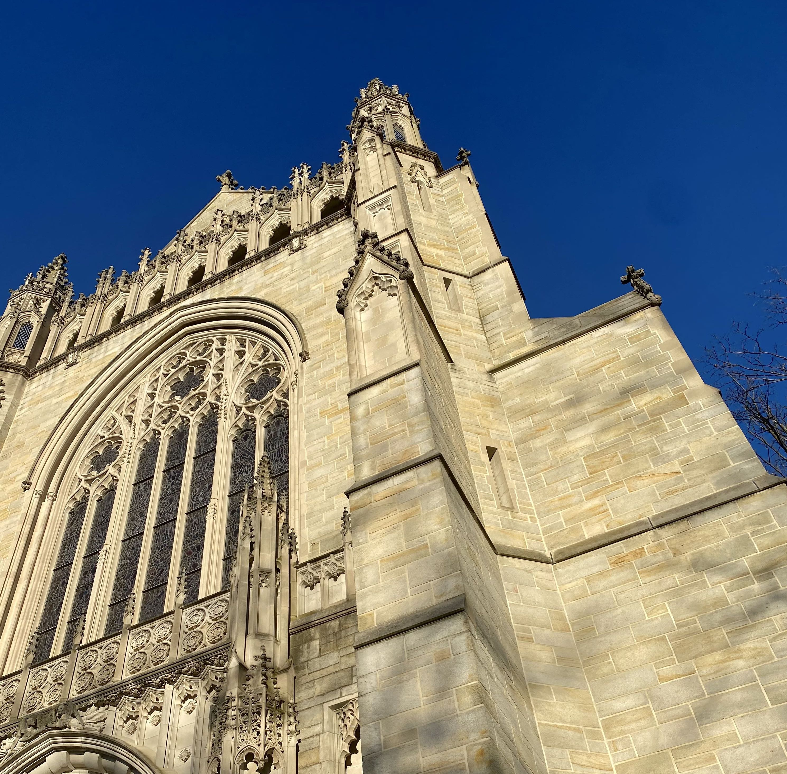
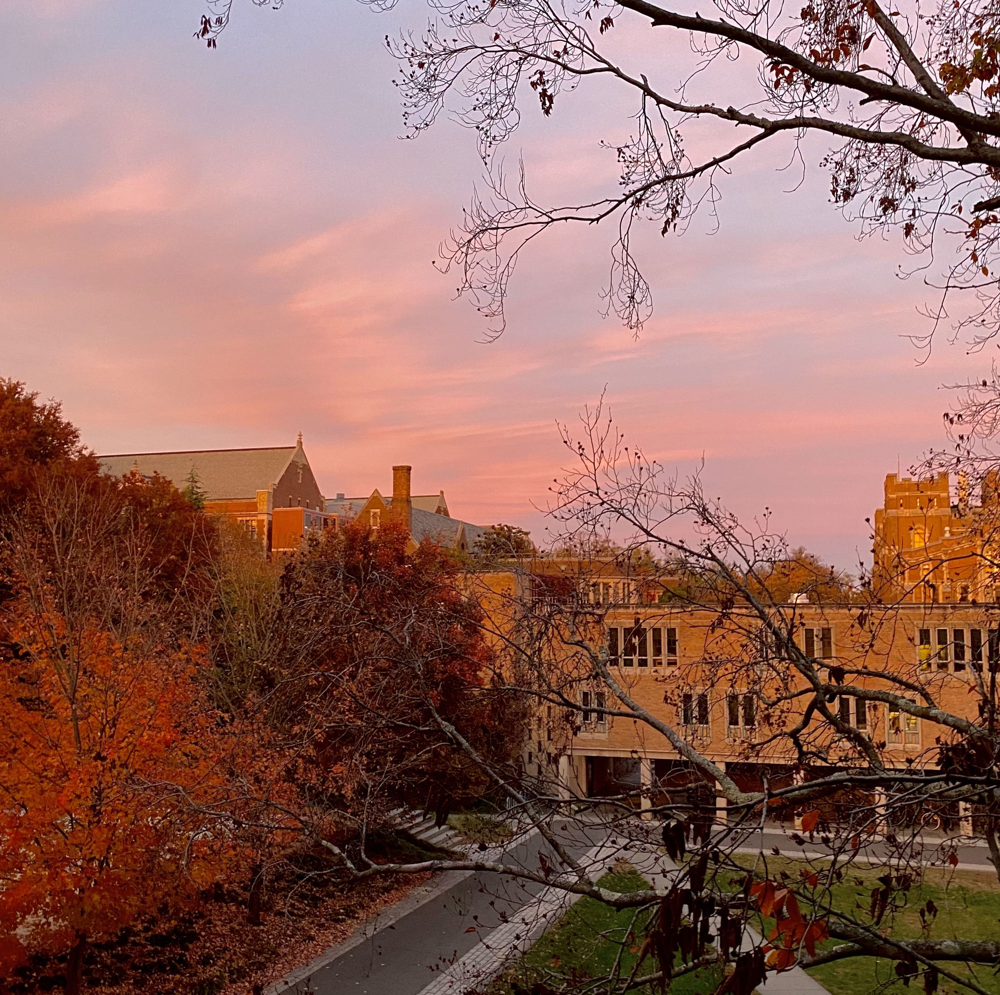

Currently, I am a sophomore at Princeton University. I am studying Computer Science in the School of Engineering and I hope to earn certificates in Technology and Society and Environmental Studies. I'm interested in leveraging computing technologies to solve environmental and societal problems.
On campus, I am the President of ResInDe, a club using principles of human-centered design and development to create platforms serving the greater Princeton community. Some of the projects I've worked on include a browser extension that raises money for the climate crisis and a virtual board to post student entrepreneurial ventures. I am also part of The Nassau Weekly, an alt-weekly campus publication, as well as the Women's Rugby Team, where I serve as Treasurer. I also participate in the Human Values Forum, where students and professors discuss issues relating to human values every week.

